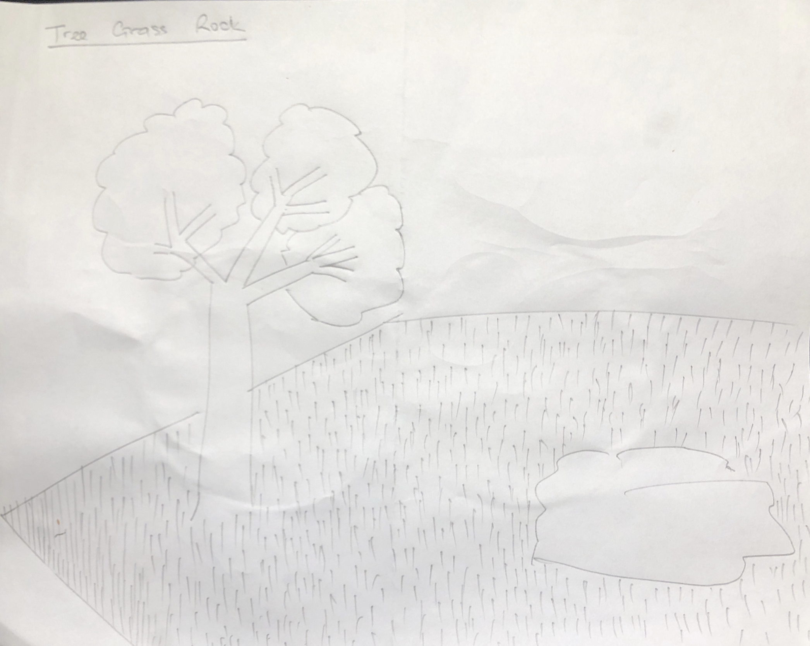
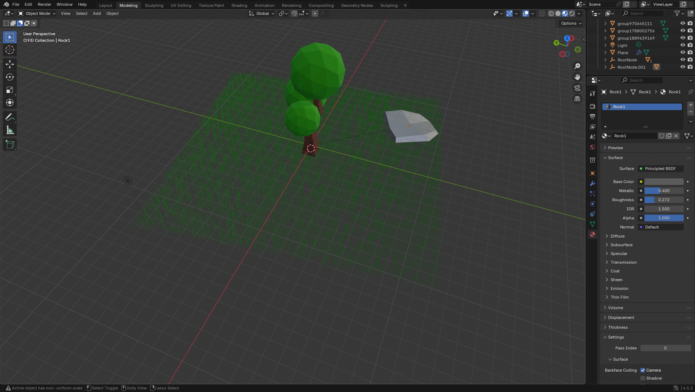
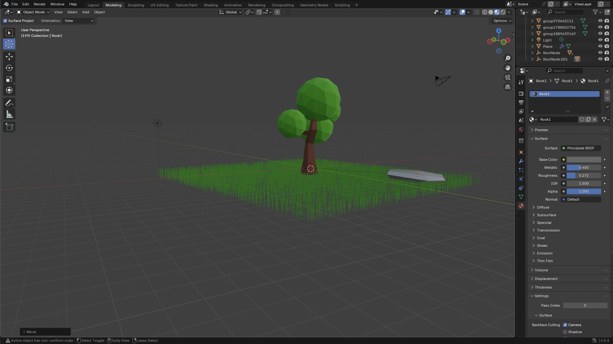
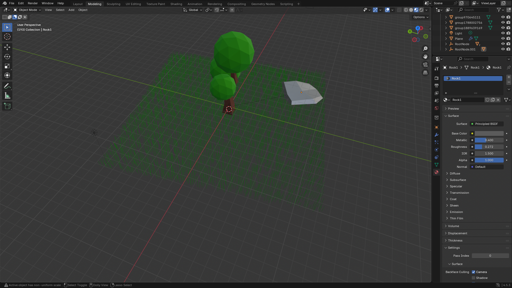

Ideation & Concept
For this assignment, I chose the nature theme — inspired by calm, outdoor environments and the beauty of organic shapes. My goal was to create a simple, stylized low-poly scene representing a tree, a rock, and grass. These three objects were chosen to symbolize balance in nature — the growth of the tree, the stability of the rock, and the freshness of the grass.
Before modeling, I created a few quick sketches of how I wanted the layout to look. I decided on a slightly elevated ground with a tree as the focal point and smaller details like the rock and grass to give depth.

Modeling Process
I started by blocking out the basic shapes using Blender’s primitive objects — cubes, spheres, and planes. Then I used the low-poly technique by reducing subdivisions and applying the Shade Flat command to maintain sharp polygonal edges.
- Tree: The trunk was formed from a scaled cube, and the leaves were made using spheres with reduced faces.
- Rock: A simple icosphere was scaled and slightly distorted with the proportional editing tool.
- Grass: A plane was duplicated and used with a hair particle system to simulate low-poly grass blades.
Once all three objects were complete, I arranged them in a small scene and adjusted the lighting with a sun lamp to highlight shadows and depth. I also experimented with different camera angles for rendering.
Final Renders
Below are three rendered views of the final scene showcasing different camera angles:



Learning Journey
This was my first hands-on experience creating low-poly 3D models in Blender. At first, it felt unfamiliar, but I quickly learned by watching short tutorials from the course’s 3D Design - Tools and Resources page. I practiced using modifiers, basic sculpting, and the outliner to organize my objects properly.
The most valuable takeaway from this project was understanding how simplicity in form can still communicate strong design aesthetics. Working with low-poly modeling improved my attention to geometry, lighting, and overall scene composition.
I also learned how to export models, set up cameras, and render images directly from Blender. Overall, this assignment strengthened both my creative and technical design skills.